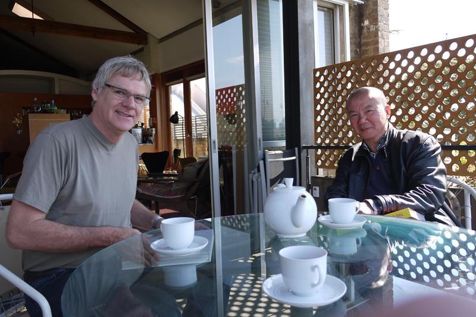

In one's life, he or she will meet someone who would like to offer help—The Chinese people call the 'someone' who has helped a "noble person", that is, who has brought good luck to us. It is so-called since "they (he or she)" have given a hand to us, thus changed our whole life when we had a difficult time in life. Aging towards sixty-years old, a period of time for people in general whose ears would only take good words, I looked back into my own living experiences and was lucky to have met several "noble persons", whose help has led a boy like me out of a poor family realize my own ideals. What I have mentioned above today is Richard Dunn, one of my "noble persons" whom I have met in Australia.
In 1998, a ten-person group show titled "In and Out" was held at the Sydney College of Arts (SCA). Among the ten persons, all other nine persons were established. I felt so lucky to be part of the show. Richard Dunn was then the SCA's President, who has made us intertwined with our living traces through this show.
1998 was the ninth-year of my coming to Australia. Although I have kept on hard working, my career was not a success insofar. My income was little as well. But I was very clear that I had to work even harder for being a successful artist, since I had no other way to go. By my continuous efforts making, I created a work of ten pieces of wall sculpture titled Two out of One in 1997. Since the work seemed to be a breakthrough compared to my previous ones, it was shown at the show "In and Out". Richard Dunn selected to install my work on the main wall of SCA's main gallery, which was a great honor for me. After the show, I felt that I had a new goal for the meaning of life.
During the show, Richard Dunn invited me to his office and said: "Do you want to take a Master of Fine Art at SCA?" I replied that I was over forty, a bit too old to study, and I could not pass the English test for sure. He then said: "never too old to learn", which I remember clearly even today. He continued by saying that by Australian law, he as President of SCA has got the right not to let me take the test. I then said, "if so, it is good, but I need one week to make a decision". Thus, I became a postgraduate of SCA, and my supervisor was Richard Dunn. I did highly regard the opportunity, and made every bit of my efforts, at the end of the year of 2000, I graduated with the best mark "Excellence". Among all the 73 graduates inclusive of undergrad and postgrad, my forty-piece graduation work of wall sculpture titled Fragments was placed again at the main wall of SCA's main gallery. And my paper was passed smoothly.
By luck, my forty-piece work titled Fragments was permanently collected by Gallery of Modern Art (QAGOMA) in Brisbane. At the end of 2001, the work was shown at an important show "Glacier" at RMIT Gallery in Melbourne.
A MFA degree means nothing to me. What is significant was through the two-year study, I not only learnt a lot, but also clearly knew my direction in terms of my future creativities. There was a small story to tell here. Almost after the first year of my postgrad study at the end of 1999, I got to Beijing and made a short film titled Song Zhuang, Spring Festival and Artists together with my friend Jin Hua. Having arrived back to Sydney, I showed this film to my supervisor for advice. Then I was eager to create new works by digital media or hoped that this media could be my new expression at least. But Richard Dunn responded by saying that my talent was in fine art rather than new media. Now I think it was due to his response that I did discover my own direction in terms of my graduation work. I still remember that during the days and nights when I was making the forty pieces of my work "Fragments" at SCA's studio, I often got either so excited or lost in pain in its producing process. It took me four months to complete the work, during that period, my mentor Richard Dunn brought other postgraduates to visit my studio space three times, and to see the progression of my production. All that has given me soundless encouragement.
Another thing took place in November 2000, a few days after I had handed in my paper, Richard Dunn called me to his office, took out my paper and said to me seriously: "Is this paper written by yourself?" I hesitated a bit before replying: "except for the English translation, it was all written in Chinese by myself". After a couple of minutes at such a frozen air between us, he suddenly laughed loudly and said: "it has been very well written!"
A few days later, when I was in lower spirit, walking across a street in Newtown, Sydney, it was a moment the sunshine reflected pale white on the black road as I could remember, and my cell phone sounded. It was Suzanne Davies, my supervisor's partner calling from Melbourne. On the phone, Suzanne said that she had heard from Richard that my paper was well done. She asked me whether I could let her to read? I replied: "yes", and posted it to her soon. I was so pleasant and became more confident of my future career than before.
My postgrad study journey was a milestone for my career and hereby I would like to express my sincere gratitude to Richard Dunn.
WANG Zhiyuan
798 Studio, Beijing
1st September, 2014